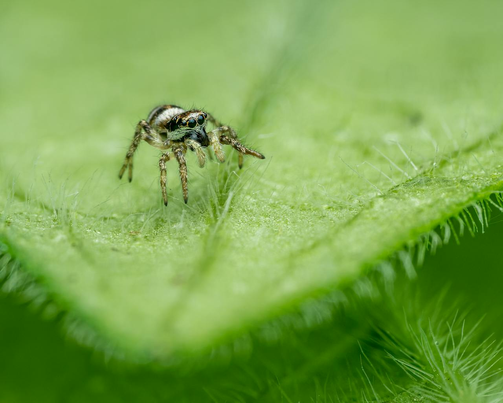
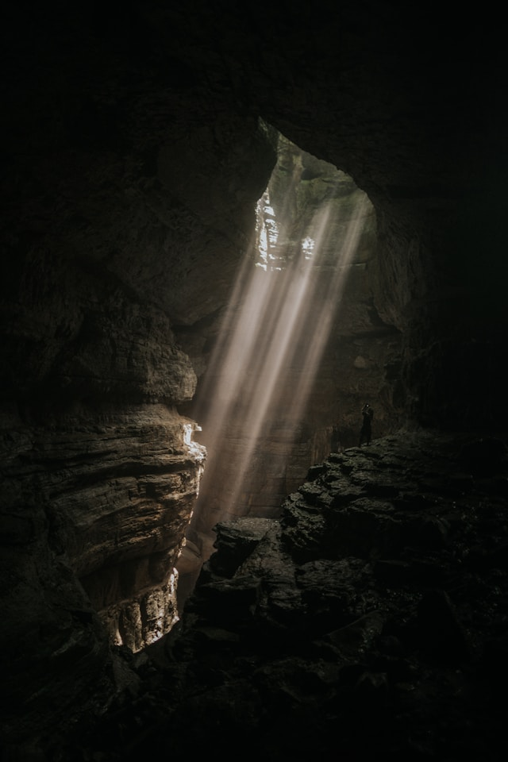

Her eight legs waddle up a long blade of grass.
Spindle observes the scenery. The lush greenery waving in the wind fills her with comfort.
However, the once-drizzly rain begins to pick up, with the slow winds growing faster and the rain overhead pouring harder. She needs to find shelter!
She sees a gleaming cave ahead. A dark, isolated area away from the rain would be ideal!
She climbs down and sprints through the grass as fast as her little legs can carry her.
